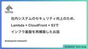
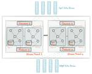
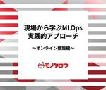
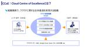
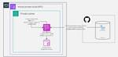
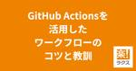
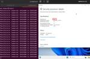
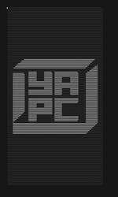
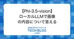
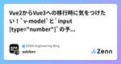

直近1週間の人気フィード
はてなブックマーク数を元に新着優先で並べ替え
社内資料「プロダクトマネージャーのための検索推薦システム入門」を公開します 153
153 LegalOn Technologies Engineering Blog
LegalOn Technologies Engineering Blog
こんにちは。LegalOn Technologies 検索・推薦チームの浅野（@takuya_b / @takuya_a）です。 先日、社内のプロダクトマネージャー（以下、PdM）を主な対象として、検索推薦技術の入門講座を開催しました。このたび、その資料を公開します。
10時間前

日本とグローバルのクックパッドを統合しました 95 クックパッド開発者ブログ
クックパッド開発者ブログ
こんにちは、レシピ事業部プロダクト開発グループの赤松(@ukstudio)です。 昨年の10月頃からレシピ事業部ではひとつの大きなプロジェクトに取り組んでいました。このプロジェクトは社内ではOne experienceと呼ばれています。本記事ではこのOne experienceについてご紹介します。 One experienceとはなにか クックパッドではレシピサービスを日本を含めた71ヶ国、29言語で展開しています。これまでは日本のサービスと海外のサービスは独立した別のシステムで別のサービスとして展開してきました。日本のレシピサービスは日本の組織が、海外のレシピサービスはイギリスにオフィスを…
13時間前

社内システムのセキュリティ向上のため、Lambda + CloudFront + S3でインフラ基盤を再構築した話 128 Uzabase for Engineers
Uzabase for Engineers
はじめに ソーシャル経済メディア「NewsPicks」SREチーム・新卒エンジニアの樋渡です。今回は、AWSサービスである「Lambda」「CloudFront」「S3」を用いて、弊社で使用している社内向けシステムの基盤を再構築し、開発者体験の向上やセキュリティ対策を行なったお話です。 お話の内容 弊社で使用している社内向けシステムの一つに「Watson」というシステムがあります。「Watson」とは簡単にいうと「NewsPicks」のユーザーIDをもとにユーザーごとの情報を検索・閲覧できるシステムで、お客様からの問い合わせ対応等に活用される重要なシステムです。「Watson」は構築されたのが…
1日前

Kafka Streams はレコードをどのように処理しているのか 33 Repro Tech Blog
Repro Tech Blog
Platform Team/Repro Core Unit の村上です。 Repro では Kafka を基盤としたストリーム処理のアプリケーションを構築する際に、Kafka Streams を積極的に活用しています。 Kafka Streams は、フォールトトレラントなステートフル処理を簡潔に実装でき、データパイプラインを Topology という表現で抽象化することで、複雑な処理でも管理しやすい形で組み立てていくことが可能です。 また、Apache Kafka 以外の外部依存がないことや Streams DSL によるシンプルな記述でストリーム処理を実装できることなども、ストリーム処理の…
16時間前

ローコード・ノーコードに潜むリスクを攻撃ツールで確かめてみた（インターンシップ体験記） 31
 NTT Communications Engineers' Blog
NTT Communications Engineers' Blog
こんにちは、NTTドコモグループの現場受け入れ型インターンシップ2024に参加させていただきました、佐藤と鈴木です。 本記事では、現場受け入れ型インターンシップ「D1.攻撃者視点に立ち攻撃技術を開発するセキュリティエンジニア」での取り組み内容について紹介します。NTTドコモグループのセキュリティ業務、とりわけRedTeam PJに興味のある方への参考になれば幸いです。 目次 目次 RedTeam PJの紹介 参加に至った経緯 インターンシップ概要 ローコード・ノーコードとは 検証業務 Power Pwnの概要 PowerDump reconコマンド dumpコマンド 条件や制約の調査 dump…
14時間前
その先に進むためのモジュラーモノリス再入門 39 株式会社ログラス テックブログのフィード
株式会社ログラス テックブログのフィード
!この記事は毎週必ず記事がでるテックブログ "Loglass Tech Blog Sprint" の 60 週目の記事です！2年間連続達成まで 残り 46 週 となりました！「モジュラーモノリス」はここ数年で広く普及してきました。実際にモジュラーモノリスを取り入れた開発事例を多く見かけるようになりました。当記事では改めてモジュラーモノリスの起源を遡り、また、さらにその先に進むためにどのような準備をしておくべきかを軽くまとめてみます。 モジュラーモノリスとは モジュラーモノリスの起源は 2018 年頃「モジュラーモノリス」という言葉の正確な起源は把握していませんが、Simo...
2日前

事業の成長にアラインするためにAWS DMSを活用してDB統合した話 64 Techtouch Developers Blog
Techtouch Developers Blog
テックタッチは以前、マイクロサービスの切り直し後に DB 統合を実施しました。本記事では、テックタッチがどういったプロセスで DB 統合を実施したかを紹介します。また、AWS DMS を利用する際に気をつけるポイントについても合わせて紹介します。
3日前

現場から学ぶMLOps: MonotaROでの実践的アプローチ～オンライン推論編～ 23 MonotaRO Tech Blog
MonotaRO Tech Blog
はじめに こんにちは。MonotaROで機械学習エンジニア兼、Tシャツのモデルを務めている新卒3年目の長澤です！ 最近は健康のためにスポーツをしているのですが、そのスポーツの疲れで日々が辛くなってきました。観戦と自分で身体を動かす方の割合(重み)をバンディットを使ってうまく最適化していきたいこの頃です。 今回は、自分がここ1,2年(2023~2024)で取り組んできたMonotaROにおけるMLOpsの取り組みについて、実例を交えながら紹介します。MLOpsの実例はあまり世の中に出回っていないので、一つの事例として読んでもらえれば嬉しいです。 はじめに この記事で紹介すること この記事で紹介し…
15時間前

Postgresqlのltreeを活用した階層構造の便利な利用法 63 RAKUS Developers Blog | ラクス エンジニアブログ
RAKUS Developers Blog | ラクス エンジニアブログ
はじめに ltreeとは ltree型 ltreeの操作 活用法 1. 承認フローの構築 事前準備 テーブル作成 データ追加 2. テーブルに細かくアクセス制御をかける 事前準備 ltreeの有効化 テーブル作成 ポリシー作成 行セキュリティポリシーの有効化 ポリシーの設定 データを追加 ユーザー作成 試す まとめ
2日前
フロントエンドのテスト戦略ってどうすればいいの？ 110 株式会社ココナラさんのフィード
こんにちは！株式会社ココナラの法律相談事業部でWebエンジニアをしている 原井夏樹 です。ココナラ法律相談というプロダクトのフロントエンド・バックエンド開発を担当しています。よければXのフォローをお願いします！喜びます！ @superhahnahこの記事ではフロントエンドテストの導入にあたり、私たちのプロダクトではどんなテスト戦略をとるべきかを調査・検討して得られた知見を共有します。読んでくださる皆さんの参考になれば幸いです。 そもそもフロントエンドのテストって色々ありすぎてよくわからん「〇〇テスト」っていう用語、本当にたくさんありますよね。 例えば…ユニットテスト(...
4日前
AWS COST CUT FIGHT 回答を作ってみました 31 弁護士ドットコム株式会社 Creators’ blog
弁護士ドットコム株式会社 Creators’ blog
概要 10月5日(土)に開催されたYAPC::Hakodate 2024 で「AWS COST CUT FIGHT」という株式会社DELTA様のイベントがありました*1。 その中で弊社SREが2000$越えのコスト削減を達成しました。 むずかった😇月間$ 2,150のAWSコスト削減に成功しました！あなたはいくら削減できる！？コスト削減クイズにチャレンジ！presented by 株式会社DELTA https://t.co/CQyjt4khLM #yapcjapan— nakamura (@__namakura) 2024年10月5日 と思ったらついに2000ドルの壁を超えた猛者が！#yap…
2日前
Findyのエンジニア爆速成長の事例 2024年夏 78 Findy Tech Blog
Findy Tech Blog
こんにちは。こんばんは。 開発生産性の可視化・分析をサポートする Findy Team+ 開発のフロントエンド リードをしている @shoota です。 先日、END が 【フルスタックエンジニアへの道！】React と TypeScript の修行をした話 というタイトルで、フルスタックエンジニアを目指すためのフロントエンドの修行の記事を投稿いたしました。 こちらの記事では React / TypeScript において個人学習程度のレベルにあった END が、機能開発を自走可能になるまでの内容が書かれています。 そこで本記事では、END の成長と挑戦をサポートし、実際に指導にあたった私がメ…
4日前
機械学習パイプラインLuigiのタスク同士の関係を良い感じに可視化する方法 23 ドワンゴ教育サービス開発者ブログ
ドワンゴ教育サービス開発者ブログ
はじめに ドワンゴ教育事業でデータサイエンティストとして働いている中井です。 この記事では、PythonのパイプラインパッケージであるLuigiで構築したパイプラインにおいて、それを構成するタスク間の依存関係・タスクのグループ間（task_namespace で分けられる）の依存関係を良い感じに出力する方法についてお話しします。想定する読者はある程度Luigiを使ったことのある方としています。 Luigiではタスク全体の依存関係を出力できますが、大規模なタスクだともう少し荒い粒度であったり、全体のうちの一部だけ見たいといったこともあると思います。この記事を読むことでそのような荒い粒度の可視化や…
2日前
ブラウザで動くMastodonを作るまでの道のり、これからのruby.wasmの開発方針。深掘りRubyKaigi 2024 文字起こしレポート vol.1 21 STORES Product Blog
STORES Product Blog
2024年6月20日に『深掘りRubyKaigi 2024 with kateinoigakukun & ledsun & remore』を開催しました。イベントの内容をほぼ全文文字起こし形式でお届けします。この記事は第1部です。 hey.connpass.com イベントのアーカイブはYouTubeでも公開しています。 登場人物 ゲスト kateinoigakukun/齋藤さん ledsun/中島さん remore/澤田さん STORES fujimura/藤村 大介 mame/遠藤 侑介 自己紹介 fujimura：藤村です。STORES でCTOをやっています。 mame：遠藤です。ST…
1日前
冪等性で挑む、非同期処理のパフォーマンスチューニング 63 GS2 Blog
GS2 Blog
前回好評だった「冪等性と非同期実行」の続編にあたる記事です。gs2.hatenablog.com私たちが提供している Game Server Services はバックエンドに Lambda + DynamoDB といったフルマネージドサービスを活用した、いわゆるサーバーレスアーキテクチャで実装されています。 前回の記事はデータの整合性を保ちつつ、いかに処理をするかに焦点を当ててお話ししました。ゲームはデータの整合性に対する要件は金融システムほどではないものの、高い水準で求められます。 あわせて、ゲームは体験に対する要件の水準が高く、レスポンスタイムへの要件にも厳しいのが特徴となっています。前…
3日前

dotenvx、ありがとう 49 株式会社ゆめみのフィード
dotenv の改良版である dotenvx が使ってみてめっちゃ良かったので紹介します。https://dotenvx.com/https://github.com/dotenvx/dotenvx 特徴特に大きいのは「環境変数の暗号化」と「複数 .env ファイルへの対応」の2つです。 環境変数の暗号化dotenvx 経由で環境変数をセットすることで、環境変数が公開鍵暗号方式で暗号化されます。dotenvx set -f .env.development API_ENDPOINT https://example.com/graphql.env.developmen...
3日前

JAWS-UG横浜 #73 AWS Management Servicesで、CCoEとAWS Organizationsの話をしてきた 25 Technology - NRIネットコムBlog
Technology - NRIネットコムBlog
こんにちは、佐々木です。 けっこう前のことですが、2024年9月3日のJAWS-UG横浜 #73 AWS Management Services回に登壇してきました。 テーマはマネージドサービスということでAWS Organizationsですが、どちらかというと、それを扱う組織・人をテーマに話しています。 発表資料と当日のアーカイブ動画 speakerdeck.com www.youtube.com お伝えしたかった事 当日の話は動画を見て頂けると幸いですが、全体的な流れとしては次のようになっています。 セキュリティの管理とCCoE 全体のテーマとしては、組織としてセキュリティにどう向かい合…
3日前

「Self-hosted GitHub Actions runners in AWS CodeBuild」を使ったバッチ実行基盤 23 エス・エム・エス エンジニア テックブログ
エス・エム・エス エンジニア テックブログ
お疲れ様です、SREの西田 ( @k_bigwheel ) です。 最近、バッチ処理を実行するための新しい基盤を構築したので、この記事ではそれの紹介をしたいと思います。 少々前提の説明を丁寧にやりすぎてしまったので、作ったものをまず見たいという方は「構築したバッチ実行基盤のアーキテクチャ図と概要」の項目へジャンプしてください。 バッチ実行基盤とは バッチジョブ、バッチ処理のための仕組みは、多くのWebサービスで設けられていると思います。 とてもプリミティブなものであれば、Webアプリが動いているEC2インスタンス/コンテナにログインして rake task ... などを実行するパターンが典型…
3日前

GitHub Actionsを活用したワークフローのコツと教訓 43 RAKUS Developers Blog | ラクス エンジニアブログ
GitHub Copilotが活躍している昨今、弊社ではGitHubで更に開発効率を良くしていこうという流れで日々自動化が行われております。今回はそんな時代だからこそ求められているGitHub Actionsについて、初心者向けにワークフロー作成の際に知っておきたいコツと教訓について紹介します。
3日前
新卒だけどいきなりRailsを6系から7系にメジャーバージョンアップしてみた話 18 Hacobell Developers Blogのフィード
はじめまして！24卒でハコベル株式会社のサーバーサイドエンジニアをしている磯貝です！ハコベルでは、『ハコベル配車管理』というサービスでRuby on Railsが使われています。この記事は内定者インターン〜入社後数ヶ月の僕がビビりながらもRuby on Railsのバージョンを6系から7系にアップデートした記録です。Railsのアップデートに関心がある方や、同じような課題に直面している方の参考になれば幸いです。 大まかな流れ今回は以下のような流れで行いました。Railsのパッチバージョンを最新に更新Railsのload_defaultsを6.1までアップデートRail...
3日前

Windows 仮想マシンの TPM 通信をキャプチャ・改ざんする 35 DARK MATTER
DARK MATTER
TPM 通信キャプチャ・改ざんを支援するライブラリを公開しました。本稿では環境を構築し、Windows 仮想マシンと仮想 TPM 間の通信のキャプチャ・改ざんするまでの方法を紹介します。
3日前
Amazon Bedrock をTeamsとノーコードで連携する 34 Taste of Tech Topics
Taste of Tech Topics
はじめに 10月に入り、やっと秋らしい感じになってきました。 データ分析エンジニアの木介です。 先日、AWS Chatbotの新機能を利用して、BedrockがTeamsやSlackと簡単に連携できるようになったと発表がありました。 今回は、その内容を確認して、BedrockとTeamsを連携する方法について、説明していきます。aws.amazon.com はじめに 概要 Amazon Bedrockとは？ 今回のゴール TeamsへのBedrockを使ったアプリの導入 構築環境 1. Agents for Amazon BedrockでAIエージェントを作成する 2. AWS Chatbot…
4日前

Perlbatross in YAPC::Hakodate 2024の結果発表と解説 #yapcjapan 9 KAYAC Engineers' Blog
KAYAC Engineers' Blog
こんにちは！ 技術部の谷脇です。 去る10/5にYAPC::Hakodate 2024が開催されました。いかがでしたか？ yapcjapan.org 以前に告知したように今回のYAPCもコードゴルフコンテストPerlbatrossを開催しました。 techblog.kayac.com このエントリでは結果発表と、事前解答チームの川添(@acidlemon)より社内最短解の紹介と解説をお届けします。 Perlbatrossは現在コードの投稿や検証はできるものの、ランキングに載らないモードになっております。あと1週間程度はこのようにしておきますので、やりそびれた方や、ちょっと試してみたいなという方…
1日前
Findyの爆速開発を支えるPull requestの粒度 110 Findy Tech Blog
こんにちは。 Findy で Tech Lead をやらせてもらってる戸田です。 既に皆さんも御存知かと思いますが、弊社では開発生産性の向上に対して非常に力を入れています。 以前公開した↓の記事で、弊社の高い開発生産性を支えている取り組み、技術についてお話させていただきました。 tech.findy.co.jp ありがたいことに、この記事を多くの方に読んでいただき反響をいただいております。 そこで今回は、↑の記事でも紹介されている「Pull requestの粒度」について更に深堀りしてお話しようと思います。 Pull requestの粒度は、弊社にJOINしたら最初に必ず覚えてもらう最重要テク…
7日前
最新の ChatGPT モデル OpenAI o1 は数理最適化問題のモデリングが(ちょっと)できる 28 Insight Edge Tech Blog
Insight Edge Tech Blog
Insight Edgeのデータサイエンティストのki_ieです。 数理最適化の専門家として、これまでさまざまな課題を数理最適化問題としてモデリングしてきました。 モデリングはアルゴリズム設計と比べて注目を集めることが少ないようですが、 実際には技術的な知見・調査を要求する骨の折れるタスクです。 このタスクを簡単にしたいとは日々思っていたところですが、最近 OpenAI o1 というモデルの論理的推論能力が高いらしいという聞きました。この賢いLLMがモデリングのお手伝いをしてくれたら嬉しいですね！ 今日は数理最適化問題(混合整数計画問題)のモデリングをどれだけLLMに任せられるのか、簡単な実験…
4日前
ブルー/グリーンなAmazon ECSサービスのネットワーク設定を変える方法 25 ENECHANGE Developer Blog
ENECHANGE Developer Blog
AWS CodeDeployでブルー/グリーンデプロイしているAmazon ECSサービスについて、もしネットワーク設定を変えたくなったら、AppSpecを編集したうえで、新しいデプロイメントをトリガーしましょう。 この方法を知らないと、ECSサービスをわざわざ作り直すか、ネットワーク変更をあきらめるか、どちらかになってしまいます。
3日前
Rails: HotwireCombobox gemが素晴らしすぎるという話（翻訳） 4 TechRacho
TechRacho
概要 原著者の許諾を得て翻訳・公開いたします。 英語記事: HotwireCombobox is pretty damn slick | justin․searls․co 原文公開日: 2024/03/29 原著者: Justin Searls -- Test Doubleの共同創業者です Rails: HotwireCombobox gemが素晴らしすぎるという話（翻訳） hotwireと相性バツグンの「コンボボックス（Web向けのドロップダウンボックスやセレクトボックスの一種で、項目を手入力すると他のオプションをフィルタできる）」の書き方を知るという大きな幸運を引き当てたので、今週の記事の執筆予定を変更するこ […]The post Rails: HotwireCombobox gemが素晴らしすぎるという話（翻訳） first appeared on TechRacho.
7時間前

プルリクを気持ちよくレビューしあえるコツあれこれ 78 アガルートテクノロジーズ/PrAhaのフィード
GitHub前提です！順不同です。 コードを提案する❌divではなく、spanを使ったほうが良いと思いました！✅divではなく、spanを使ったほうが良いと思いました！+ <div>山田</div>- <span>山田</span>文章だけで「ここはこうした方がいい」を説明するより、コードも一緒に提案してあげた方が分かりやすいです。GitHub上だと、以下のように操作するとコードの提案ができます👇️ GitHubのリンクを貼る時はパーマリンクを使う❌https://github.com/prisma...
7日前
Vue Fes Japan × TSKaigi 合同イベント 「次世代フロントエンドツールチェイン」は広い学びのある最高のイベントだった #vuefes_tskaigi 4 Stockmark Tech Blog
Stockmark Tech Blog
こんにちは、ストックマークで技術広報とエンジニアをさせていただいています安藤( @ampersand_xyz )です。 本記事では2024/10/2に開催された Vue Fes Japan × TSKaigi 合同イベント 「次世代フロントエンドツールチェイン」 のイベントの参加レポート・セッションの記録をお伝えさせていただきます。 Vue FesとTSKaigiが合体した奇跡の大満足イベントでした Vue Fes Japan 2024 見どころ紹介 / Vue.js-jp 沖さん 登壇予定だったKazuponさんに変わって、Vueの日本コミュニティの沖さんがファシリテーション＆登壇され、今年…
1日前

Googleの画像生成AIツール「Image FX」とは？実際に使いながら機能やコツを解説します 6 株式会社LIG(リグ)｜DX支援・システム開発・Web制作テクノロジー の記事一覧 | 株式会社LIG(リグ)｜DX支援・システム開発・Web制作
株式会社LIG(リグ)｜DX支援・システム開発・Web制作テクノロジー の記事一覧 | 株式会社LIG(リグ)｜DX支援・システム開発・Web制作
こんにちは！ インハウスマーケティング部のりこぴんです。 最近はさまざまな画像生成AIツールが台頭し、目まぐるしい進化を遂げていますね。 今回は、まるで一眼レフで撮影しているかのようにハイクオリティな画像が生成できる「I […]
3日前
新入社員のオンボーディングをするエンジニアのための「メンターの心得」 3 BASEプロダクトチームブログ
BASEプロダクトチームブログ
新しい方を受け入れる側のマインドセットです。 はじめに BASE の Product Dev Division でシニアエンジニアをしているプログラミングをするパンダ（@Panda_Program）です。 入社されて3ヶ月目で同じチームで働いている Torata さんが「入社して感じたBASEのいいなと思うところ」という入社エントリを書いてくれたので、新入社員を受け入れる側からのアンサー記事です。 以下はBASE社内の人なら誰でも読むことができる文書で、特にこれからメンターになる人には読んで貰っているものです。自分が受け入れ側として数ヶ月間特に意識しており、手応えがあったことを書き残しています…
2日前
外部サービス連携におけるリコンサイルの重要性と実装時の検討ポイント 4 inSmartBank
inSmartBank
こんにちは！サーバーサイドエンジニアのkurisuです。 2024年06月に、B/43あとばらいチャージの裏側でサービス提供していただいている事業者の移行を行いました。その際、返済データのリコンサイルバッチの設計と実装を担当しました。 外部サービスとのデータ連携における不整合は、多くのシステムで避けられない問題です。 本記事では、B/43のあとばらいチャージ機能での事例をもとに、リコンサイルの重要性と実装時の検討ポイントをご紹介します。 リコンサイルとは 外部サービス連携における課題と不整合の要因 1. 自社から外部サービスへの通信エラー 2. Webhook通知の不達や遅延 外部サービスにお…
2日前

【Phi-3.5-vision】ローカルLLMで画像の内容について答える 4GMOアドパートナーズ TECH BLOG byGMO
はじめに GMO NIKKOの吉岡です。前回の記事ではPhi-3-MediumをGPUで動かしてみましたが、今回はもう一つの気になるモデル、Phi-3-visionを紹介します。新しいバージョン3.5が公開されているので
3日前
AWS Fargate Spot が中断されにくいのはいつ？ 29 Hatena Developer Blog
Hatena Developer Blog
皆さん、AWS Fargate Spot使ってますか？ 最近Arm向けもサポートされてより活用範囲が広がっているかと思います。 さて、Fargete SpotはFargateのコンピューティングリソースの状況次第でタスクが中断される代わりに、最大通常の7割引きでタスクを実行できる機能です。 とはいえ、できることなら中断はされたくないですよね。 ここに「ある1ヶ月のFargate Spotの中断回数のグラフ」があります*1。何となく中断具合に周期性がありそうですね。 グッとにらむとこうなりました。 明らかに日曜日近辺の中断回数が少ないです。 つまり？ 中断されたくないタスクをFargate Sp…
7日前
ソフトウェア品質シンポジウム 2024 参加レポート 3 Nealle Developer's Blog
Nealle Developer's Blog
こんにちは、QAチームの鹿間です。 2024/9/16, 17に行われた ソフトウェア品質シンポジウム2024 に参加しましたので、参加レポートを書いてみようと思います！ １. ソフトウェア品質シンポジウム(SQiP)とは ２. 本会議参加レポート 本会議１日目、株式会社EARTHBRAIN 代表の小野寺さんの特別講演 個人事業主の熊川さん グロース・アーキテクチャ＆チームス株式会社の常盤さん ３．最後に １. ソフトウェア品質シンポジウム(SQiP)とは 「ソフトウェア品質シンポジウム」は、 日科技連が主催するソフトウェア品質に関する国内最大級のシンポジウムで、毎年9月の初旬に開催されていま…
2日前

Vue2からVue3への移行時に気をつけたい！`v-model`と`input[type="number"]`の予期せぬ型変換 3 SODA Engineering Blogのフィード
Vue3では、inputがtype="number"を持つ場合はnumber修飾子が自動で適用されますref: https://ja.vuejs.org/guide/essentials/forms.html#number一方Vue2では、明示的に.numberを使用しない限りv-modelは文字列のまま扱われていましたそのため、Vue2からVue3への移行をする際に、実装によっては意図しない挙動になってしまうかもしれません 検証環境を用意し、何が起こっているかを確認する今回はVue2, Vue3と環境を用意し、iframeを使って1つのHTMLで確認できるよう動かして...
3日前
SmartHRのVP of Engineeringに就任する齋藤さんを紹介します！ 3 SmartHR Tech Blog
SmartHR Tech Blog
2025年1月より、SmartHRの新たな VP of Engineering に齋藤 諒一さんが就任します。 現 VP of Engineering の森住 卓矢さんからバトンが渡される形です。 smarthr.co.jp 本記事では、齋藤さんについて森住さんがあれやこれやと深堀りした様子をお届けします。 齋藤さんのこれまでのキャリアや経験、そして VP of Engineering として今後どんな開発組織をつくっていきたいかなどについてお話ししています。 はじめに 森住：現 VP of Engineering の森住です。この度、2024年末に VP of Engineering を退任…
3日前

【Sansan Tech Talk】研究開発部のプラットフォーム戦略 〜マルチプロダクト環境における課題と展望〜 3 Sansan Tech Blog
Sansan Tech Blog
こんにちは、Sansan Engineering Unit 部長の笹川裕人です。今回で7回目を迎える「Sansan Tech Talk」では、Sansanのテックリードが日々取り組んでいる技術的な課題や挑戦を深掘りしてお届けしています。今回は、研究開発部で活躍するWebアプリエンジニアの新井和弥にインタビューしました。▼連載記事はこちら buildersbox.corp-sansan.com
4日前

【YAPC::Hakodate 2024 参加レポート】LayerXにおけるLLMのプロダクト活用 #yapcjapan 3 LayerX エンジニアブログ
LayerX エンジニアブログ
こんにちは、LayerX Fintech事業部エンジニアの伊藤( @etaroid )です。 この記事は、2024年10月4日(金) ~ 2024年10月6日(日)に北海道函館市で開催されたYAPC::Hakodate 2024への参加レポートです。 今回LayerXは、プラチナスポンサー＆学生支援スポンサーとして協賛させていただき、企業ブースの出展、LayerXが取り組んでいるLLM（大規模言語モデル）のプロダクト活用についての発表などを行いました。 tech.layerx.co.jp 会場は、多くのエンジニア、学生、スポンサー企業の方々が集まり、技術についてディスカッションする熱気で溢れか…
4日前

ZOZOTOWNのURLを生成するツールを作った話 5 ZOZO TECH BLOG
ZOZO TECH BLOG
はじめに こんにちは、ZOZOTOWN企画開発部・企画フロントエンド1ブロックのゾイです。 ZOZOTOWNトップでは、セール訴求や新作アイテム訴求、未出店ブランドの期間限定ポップアップ、著名人コラボなどの企画イベントが毎日何かしら打ち出されています。私はそのプラットフォームとなる企画LPをメインに実装するチームに在籍しています。 今まで実装した企画LPをアーカイブするプロジェクトにも参加しているので、チームの特性や企画LPの詳細は下記の記事をご覧いただければと思います！ techblog.zozo.com 目次 はじめに 目次 背景・課題 仕様・技術選定 1. 型の定義と入力データのバリデー…
7日前
Cloudflareの大幅アップデートなど: Cybozu Frontend Weekly (2024-10-01号) 4 サイボウズ フロントエンドのフィード
こんにちは！サイボウズ株式会社フロントエンドエンジニアのdaiki（@k1tikurisu）です。 はじめにサイボウズ社内では毎週火曜日にFrontend Weeklyと題し「一週間の間にあったフロントエンドニュースを共有する会」を開催しています。今回は、2024/10/01のFrontend Weeklyで取り上げた記事や話題を紹介します。 取り上げた記事・話題 WebKit Features in Safari 18.0https://webkit.org/blog/15865/webkit-features-in-safari-18-0/Safari 18.0が...
7日前
Go の静的解析で DB へのコミット漏れを検出する 3 カンムテックブログ
カンムテックブログ
エンジニアの佐野です。カンムはバックエンドに PostgreSQL を置きつつサーバを Go で書いています。DB のトランザクションの取り回しは概ね次の様なイディオムになっているのですが、先日 Commit() が漏れている箇所を見つけまして...。結果としてそれについては大きな問題はなく秋の夜長に遅めの肝試しをする程度で済んだのですが、これは事故に繋がるためトランザクションの Commit 漏れ(defer Rollback() 漏れも)を検出する Linter を書きました。 tx, err := db.BeginTx(ctx, nil) if err != nil { return e…
6日前
10月24日に「生成AI×新規事業 の挑戦 〜生成AIを学びながら技術とチームを磨いた事業立ち上げの道のり〜」をオンライン開催します 3 Hatena Developer Blog
2024年10月24日（木）に 「生成AI×新規事業 の挑戦 〜生成AIを学びながら技術とチームを磨いた事業立ち上げの道のり〜」をオンライン開催します。本イベントでは、生成AIを学びながら課題を解決してきた道のりや、事業立ち上げ時の技術選定、チーム運営の様子を紹介します。皆様のご参加をお待ちしております！
6日前